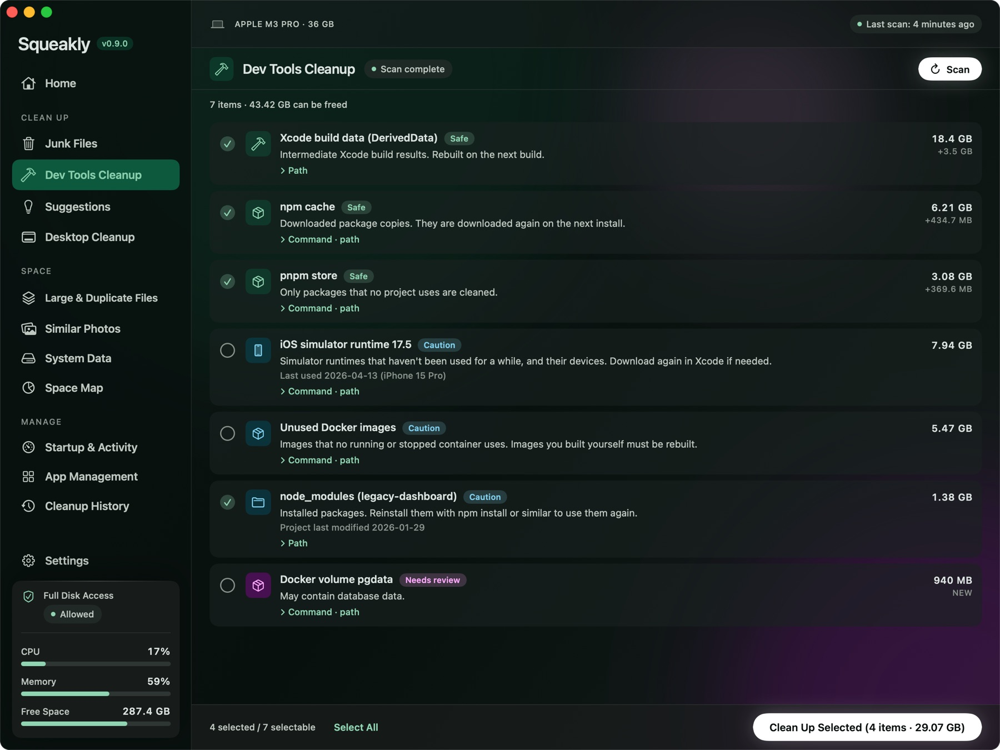
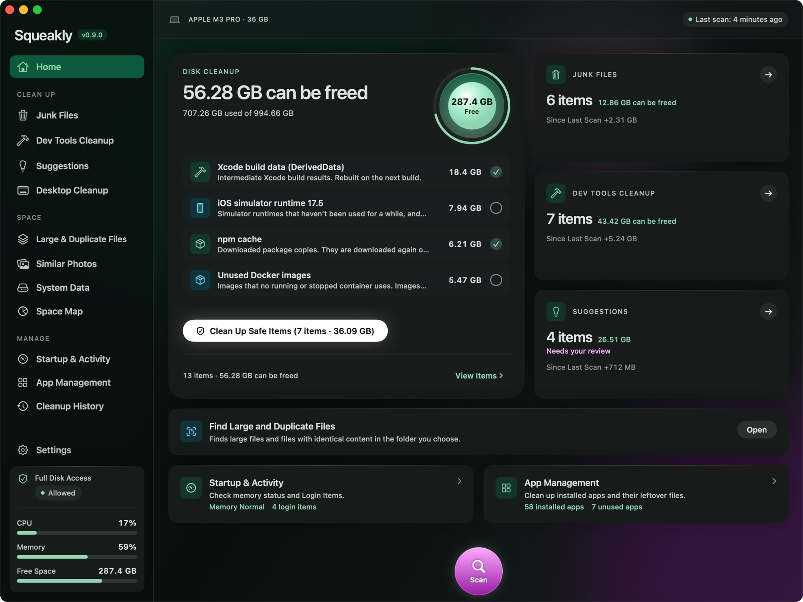
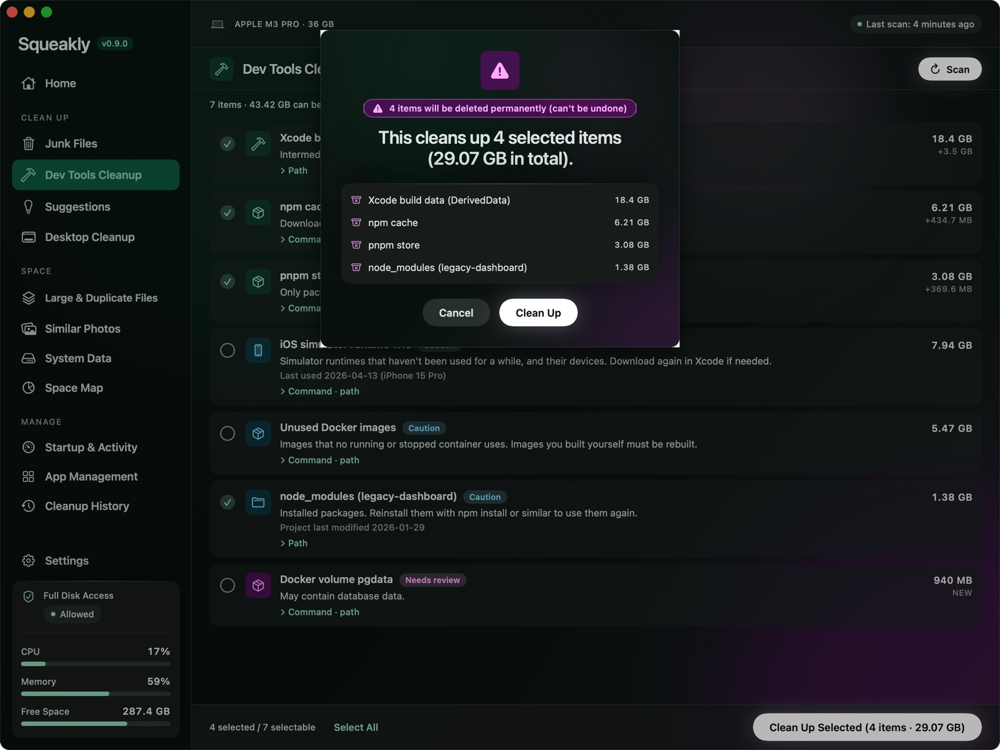
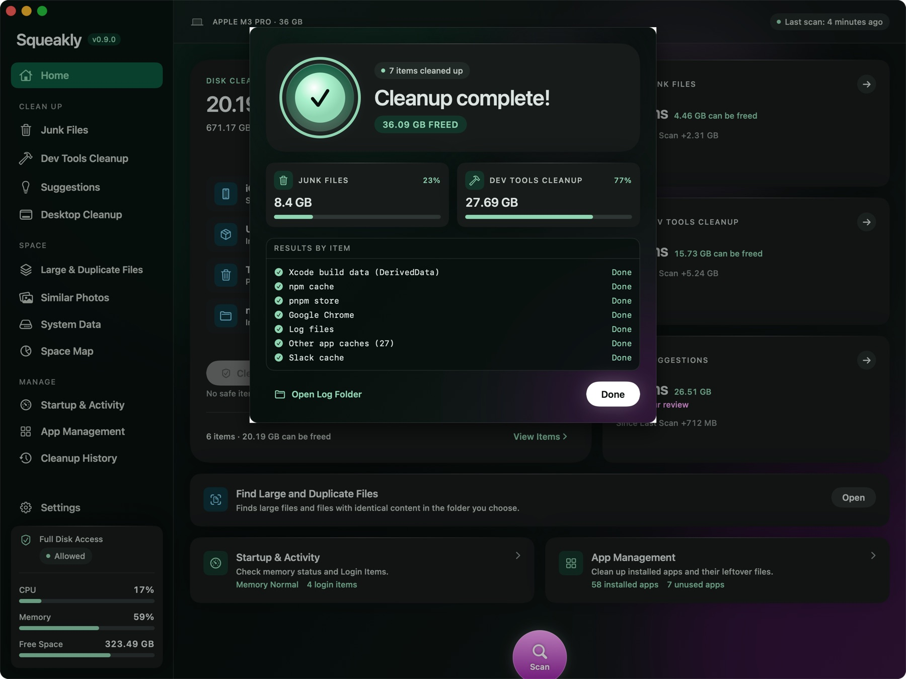
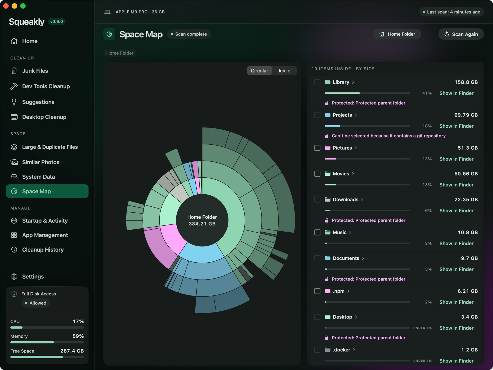
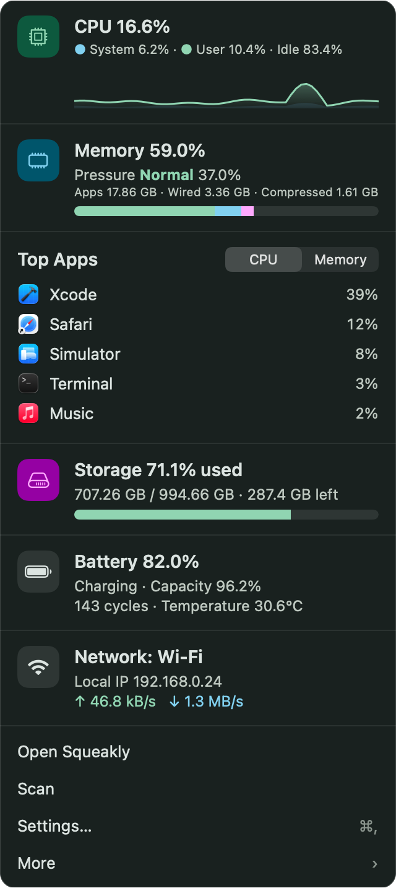

Squeaky-clean
your Mac
Squeakly shows you everything it deletes, and why. If you've ever dug through ~/Library to free up space, it does that for you. Beyond caches and logs, it finds what piles up when you build software: Docker images, Xcode build data, old node_modules. It leaves your logins, cookies, and SSH keys alone.

Three clicks and you're done
There's almost nothing to set up or learn. Scan, look, and pick.
Scan
One click scans caches, logs, developer tools, and large files. Nothing is deleted at this step.
Junk Files 4.2 GB · Dev Tools 31.8 GB
Review and pick
Every item has a risk level and a reason it can go. Only Safe items are checked for you. You pick the rest.
Clean up and check the log
Before cleaning, it shows once more what goes to the Trash and what gets deleted right away. Afterward, everything is logged.
Don't trust Mac cleaners? Fair enough.
"Don't install a cleaner app" is common advice in Mac communities, and for good reason. They overstate results, delete too much, and run all the time. Squeakly is built the other way around.
When in doubt, it doesn't delete
Logins, cookies, browsing history, and keys never even show up in the list. Anything uncertain goes to the Trash, so you can take it back out if you change your mind. Every cleanup is logged.
It knows developer clutter
Docker, Xcode, simulators, Gradle, node_modules, old Node versions from nvm, finished git worktrees. Most cleaners don't know about these, and they're usually where the space went.
Just the numbers
No "optimization score," no memory cleaner, no virus scan. Only sizes it actually measured and space it actually freed.
What it does
Every item is marked Safe, Caution, or Needs review, with a one-line reason it can go. Only Safe items, which come back on their own, are checked from the start.
Clean Up
Space
Manage
What's new
Take a look
Real app screens, from scan to cleanup.




Numbers and file names in these screens are examples.
It tells you first, from the menu bar
Click the menu bar icon to see CPU, memory, storage, and the apps using the most right now. When there's something to clean, Squeakly sends a notification, but it only deletes when you click.
- Move an app to the Trash and Squeakly asks whether to clean up the files it left behindNew
- When your Desktop piles up, it lets you know. You can also have it tidy up while you're away. Files you touched today stay putNew
- When old installers pile up in Downloads, it lets you knowNew
- When storage runs low, it lets you know. Each notification can be turned off in Settings

Things it never deletes
No matter which screen you picked something from, Squeakly checks again right before deleting. Anything on this list is skipped.
Hands off
- Keys and credentials: SSH and GPG keys; AWS, Google Cloud, GitHub CLI, npm, and git credentials; Keychain
- Browser data: cookies, logins, history, bookmarks
- Personal data: Mail, Messages, Safari, Photos library
- Cloud: iCloud Drive and cloud storage folders
- App settings and data: only go to the Trash when you delete that app
- Company security and management software: never deleted or turned off
Rules it follows when deleting
- Only Safe items are checked for you. They're things like caches that come back, so they're deleted right away
- Large and duplicate files, and files left by deleted apps, go to the Trash. You can take them back out until you empty it
- If anything can't be undone, like a Docker volume, the confirmation calls it out: "N items will be deleted permanently"
- Every cleanup is logged in
~/Library/Logs/Sweeper - It doesn't collect usage data or personal information
Get it free
Once it's installed, the app checks for updates on its own.
Squeakly for Mac
- macOS 14 Sonoma or later · English and Korean
- Apple Silicon and Intel (one universal app)
- DMG about 11 MB
- Not notarized yet, so the first launch needs Open Anyway
- Download the latest DMG, open it, and drag Squeakly to the Applications folder.
- The first time you open Squeakly, macOS says it can't be opened. That's expected. Click Done.
- Go to System Settings → Privacy & Security, scroll down, and click Open Anyway → enter your password → Open. You only need to do this once.
- To include the Trash, Mail attachments, messenger caches, and iPhone backups, turn on Squeakly under Full Disk Access on the same screen.
Known limitations
It's still being polished, so here's what to expect.
- Not notarized by Apple yet. macOS blocks it the first time you open it. The install steps above show how to open it.
- The Trash, Mail attachments, messenger caches, and iPhone backups only show up with Full Disk Access.
- Similar Photos needs access to your Photos library.
- The app is in English and Korean only for now.
- It's made by one person, so replies can take a little while. Please report problems or ideas as a GitHub issue.
FAQ
I get a warning when I open it.
That's because Squeakly isn't notarized by Apple yet. Go to System Settings › Privacy & Security, scroll down, and click "Open Anyway."
Is it free?
The current version is free.
Will it make my Mac faster?
It doesn't promise that. What Squeakly does is get storage space back. Features with doubtful benefits, like memory cleaning, are left out on purpose.
Can I get deleted files back?
Anything sent to the Trash (large and duplicate files, files left by deleted apps, and so on) can be restored until you empty the Trash. Safe items like caches are deleted right away, but apps rebuild them when they need them. If anything can't be undone, Squeakly tells you how many before it cleans.
Do I have to turn on Full Disk Access?
No. Caches and developer tools can be cleaned without it. Turn it on when you want to include places macOS protects, like the Trash, Mail attachments, messenger caches, and iPhone backups.
Is it always running?
It stays in the menu bar and checks whether there's anything to tell you. The menu bar icon, notifications, and Open at Login can all be turned off in Settings.
Does it send my data anywhere?
No. The only time it goes online is to check GitHub for updates.
Can I use it on a work Mac?
Squeakly is blocked from deleting or turning off company security and management software. Still, every company has its own rules, so check yours.
Start with a scan
Before anything is deleted, it shows how much you can free. If you don't like what you see, just close it.